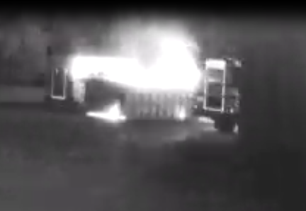

This site is currently under construction and is a dumpster fire.


Welcome to Richardton-Taylor's IT Links Page
Inspired by 90's and early 2000's website design, it includes links to several useful items such as:
- A link to old versions of the school website to reference how far our website and web design has come.
- A link to Richardton-Taylor Minecraft EDU information.
Click here for the old school website!NOT FULLY TRANSFERRED
Minecraft EDU InformationSERVER NOT SPUN UP YET!
This will eventually include a ticket system, knowledgebase, dashboards, and other neat things!